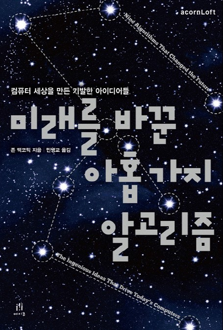

네이버나 구글등에서 우리가 검색한 결과가 어떻게 잘 맞는지, 로그인을 할때 비번이 어떻게 지킬지등등
우리가 매일 하고 있 활동들을 이 책은 적절하게 비유를 하면서 설명해 주고 있다. 그러면서 하나하나
알아가는 재미를 느낄 수 있었다. 작가는 디테일한 컴퓨터의 원리를 설명하기 보단 큰 그림의 컴퓨터 원리를
설명 해주면서 우리가 편하게 쓰는 컴퓨터의 알고리즘을 간단하게 설명하는 것이 목표라고 했고 나는 이 책이
충분히 목표를 이뤘다고 생각한다. 컴퓨터의 원리는 수학적인 해법이 많이 들어가 있었고, 창의력 또한 많이
필요하다는 것을 알았다. 이런 컴퓨터의 발전 과정을 보면서 정말 모든 개발자들에게 존경심이 느껴지고 내가
되고 싶은 모습을 보여주는 책이었다.

-->